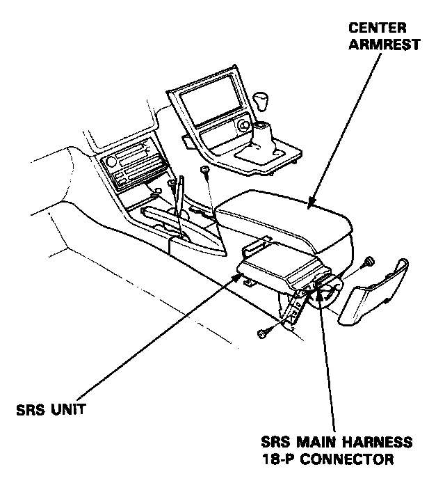
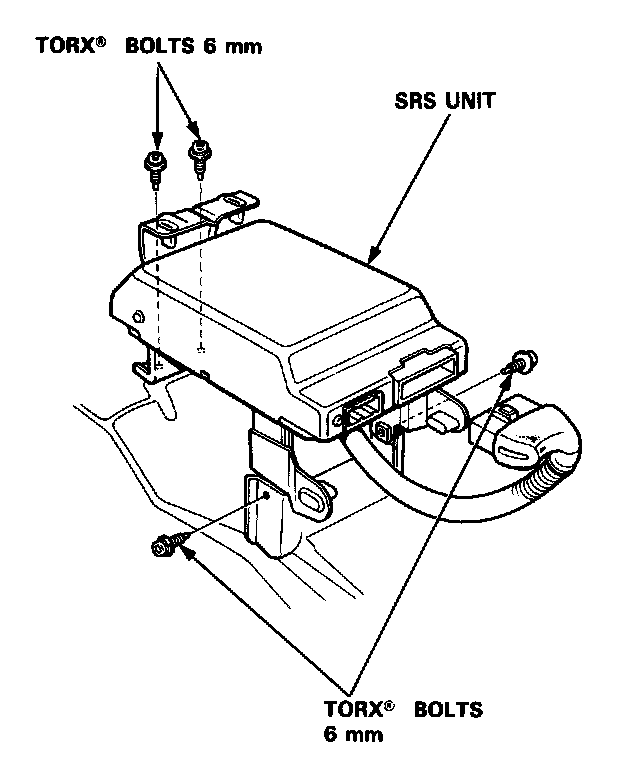
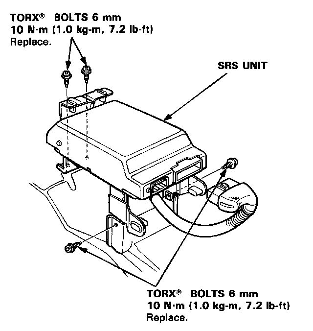
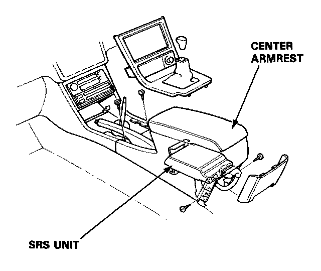

Air Bag Control Module: Service and Repair
SRS Unit Removal and Installation
Removal:
CAUTION:
- Always keep the short connector on the airbag connector when the harness is disconnected.
- Do not damage the SRS unit terminals or connectors.
- Do not disassemble the SRS unit; it has no serviceable parts.
- Store the SRS unit in a clean, dry area.
- Do not use any SRS unit which has been subjected to water damage or shows signs of being dropped or improperly handled, such as dents, cracks or deformation.
NOTE: Before you disconnect the battery, be sure you get the customer's anti-theft radio code number (L, LS model).
1. Disconnect the battery negative cable, then disconnect the positive cable.
2. Before disconnecting any part of the SRS wire harness, install the short connectors - refer to "Short Connector Installation" procedure.
3. Remove the rear console, then disconnect the SRS main harness 18-P connector from the SRS unit.

4. Remove the 4 SRS unit mounting bolts, then remove the SRS unit.

Installation
CAUTION: Be sure to install the SRS wiring so that it is not pinched or interfering with other parts.
1. Install the SRS unit.

2. Connect the SRS main harness 1 8-P connector to the SRS unit; push it into position until it clicks.
3. Install the center armrest.

4. Remove the short connector (RED) from the front passenger's airbag and the short connector A from the SRS main harness.
5. Reconnect the front passenger's airbag connector to the SRS main harness connector, then reinstall the glove box.
6. Remove the short connector (RED) from the driver's airbag and the short connector A from the cable reel.
7. Reconnect the driver's airbag connector to the cable reel connector. Attach the short connector (RED) to the access panel, then reinstall the panel on the steering wheel.
8. Remove the short connectors (RED) from both seat belt pretensioners, then attach the short connectors (RED) to their holders.
9. Reconnect the side wire harness connector to the driver's pretensioner, and the main wire harness connector to the front passenger's seat belt pretensioner.
10. Reconnect the battery positive cable, then the negative cable.
11. After installing the SRS unit assembly, confirm proper system operation.
- Turn the ignition to II: the instrument panel SRS indicator light should go on for about 6 seconds and then go off.
- Enter the customer's code number to restore radio operation.